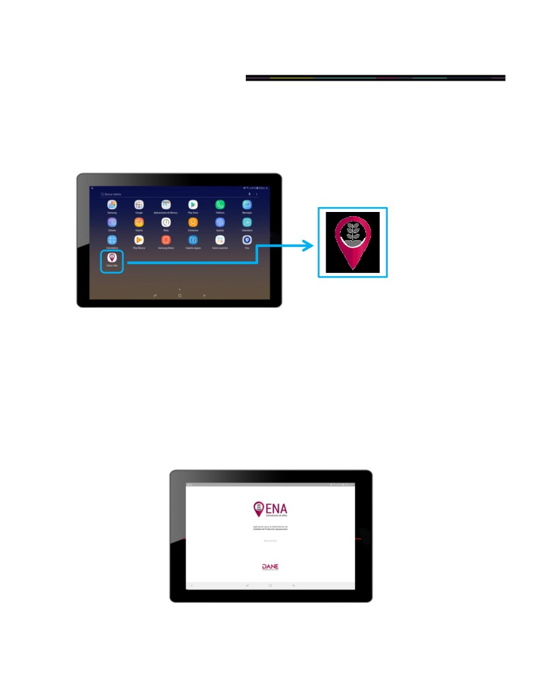
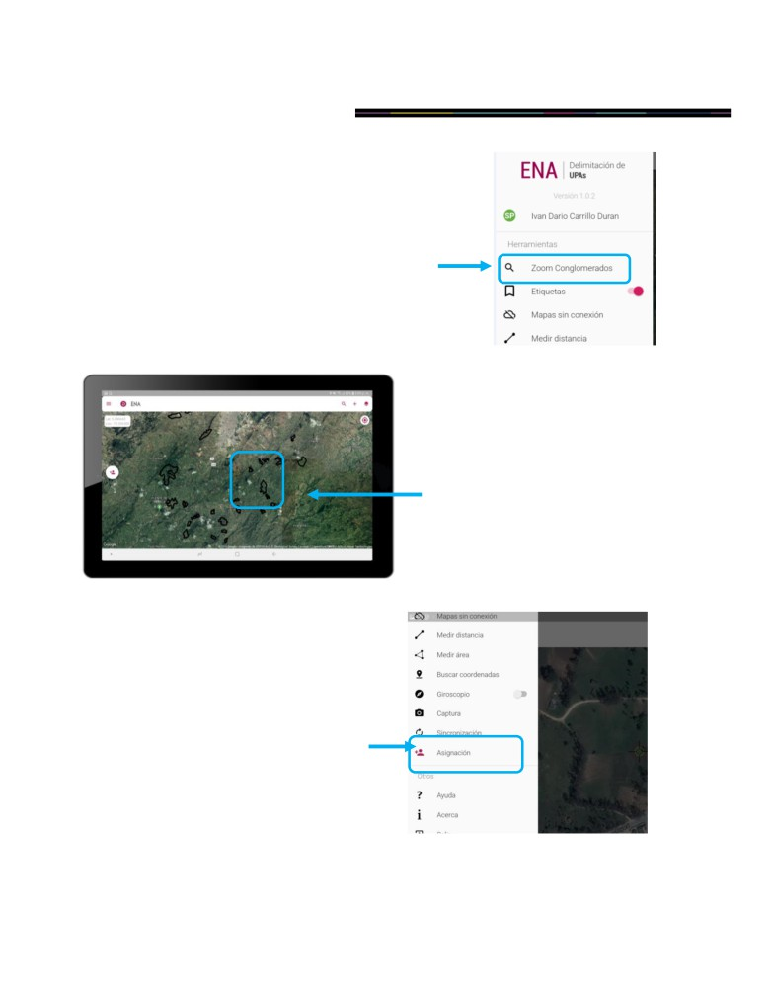
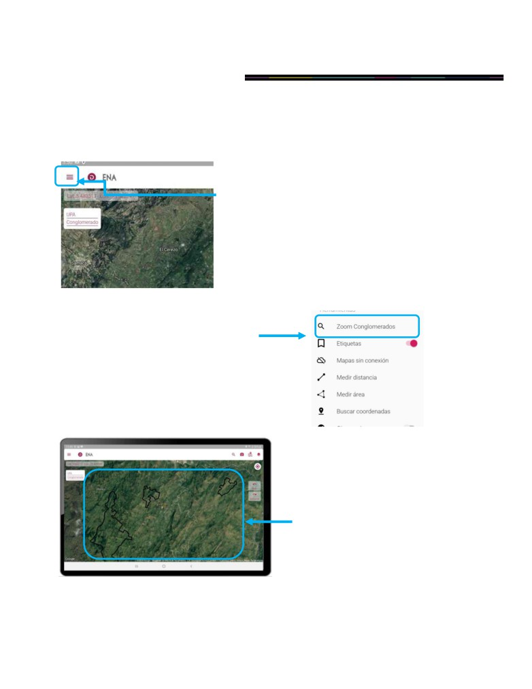
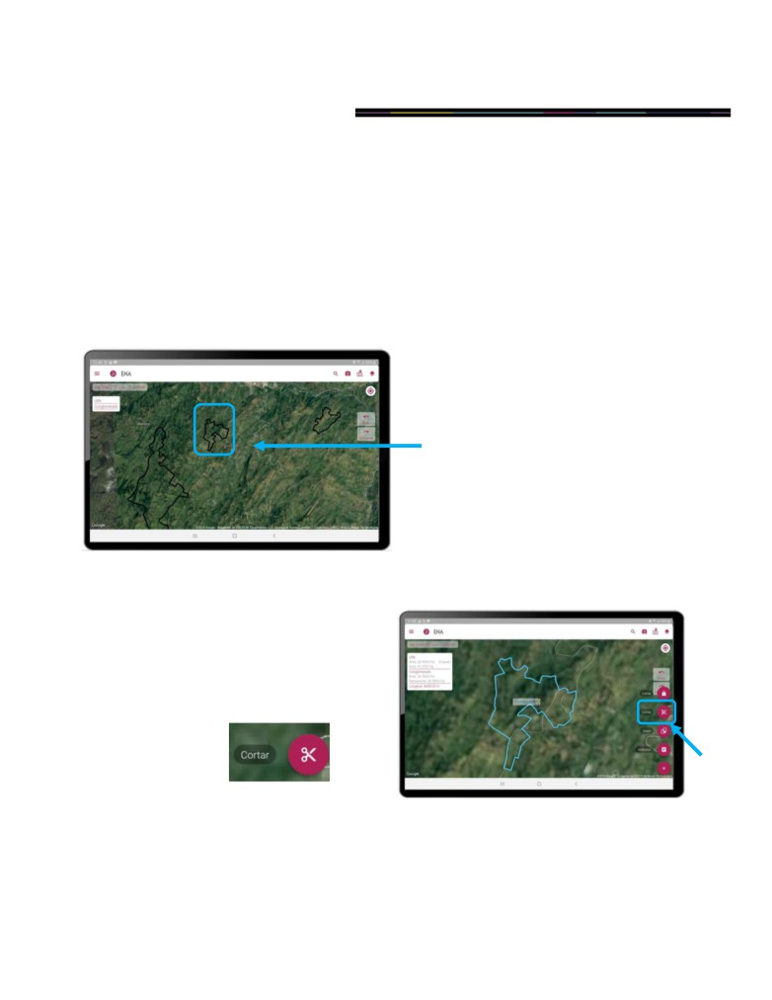
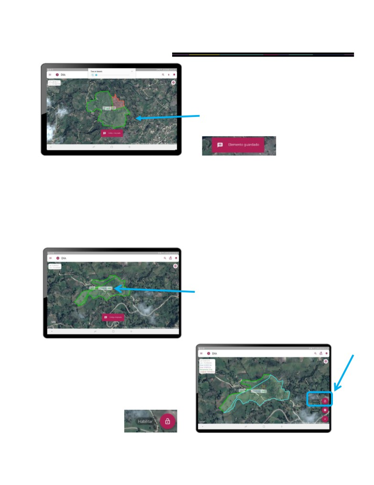

2019
DIRECCIÓN DE GEOESTADÍSTICA (DIG)
SISTEMA DE INFORMACION GEOESTADÍSTICA (SIGE)
MANUAL DE USUARIO APP MÓVIL ENCUESTA NACIONAL
AGROPECUARIA - ENA
NOVIEMBRE DE 2019
Versión 1.0.4
MANUAL DE USUARIO APP MÓVIL ENA
ENCUESTA NACIONAL AGROPECUARIA
CONTENIDO
INTRODUCCIÓN
4
1. REQUISITOS DEL DISPOSITIVO
5
2. INSTALACIÓN
6
2.1 Actualización Play Services
6
2.2 Instalación de la Aplicación
7
2.3 Actualización de la Aplicación
10
3. HERRAMIENTAS DE LA APLICACIÓN
11
3.1 Herramientas de la pantalla inicial
11
11
3.1.1Menú Principal
12
3.1.2Tipo de Mapa Base
13
3.1.3Búsqueda de conglomerados y UPAs
14
3.1.4Botones Atrás y Adelante
15
3.2 Otras Herramientas
16
3.3 Descripción en el mapa
16
4. INGRESO A LA APLICACIÓN
17
4.1 Ingreso a la aplicación
17
4.2 Pantalla de bienvenida
17
4.3 Inicio de sesión y escaneo de código QR
18
5. ACTIVAR MBTILES
19
5.1 Mapa sin conexión
19
6. SUPERVISOR
20
Flujo de trabajo inicial del Supervisor
20
6.1 Proceso de Sincronización
20
6.1.1Flujo de trabajo proceso de Sincronización
22
6.2 Proceso de Asignación de Conglomerados
22
6.2.1Flujo de trabajo proceso de Asignación
25
6.3 Generar Código QR Encuestadores
25
DANE, INFORMACIÓN PARA TODOS
|
2
MANUAL DE USUARIO APP MÓVIL ENA
ENCUESTA NACIONAL AGROPECUARIA
6.4 Proceso de Compartir Asignación
27
6.4.1Enviar Asignación
27
7. ENCUESTADOR
29
Flujo de trabajo inicial del Encuestador
29
7.1 Proceso de Sincronización
29
7.2 Proceso de Recibir Asignación de Conglomerados
29
7.2.1Proceso de Revisión de Asignación de Conglomerados
31
7.3 Proceso de Delimitación de UPAs
32
7.3.1Corte
32
7.3.2 Libre
33
7.3.3Vista
35
7.3.4Unión
37
7.3.5Cerrar
38
7.3.6Habilitar
39
7.4 Sincronización Final
41
8. Tomar Foto
42
9. Novedades Cartográficas
45
9.1 Punto
46
9.2 Línea
47
9.3 Polígono
48
10. Verificación
50
DANE, INFORMACIÓN PARA TODOS
|
3
MANUAL DE USUARIO APP MÓVIL ENA
ENCUESTA NACIONAL AGROPECUARIA
INTRODUCCIÓN
Dentro de las acciones encaminadas para ofrecer información confiable y oportuna sobre la actividad
del sector agropecuario se encuentra la realización, desde el año 1995, de la Encuesta Nacional Agropecuaria
(ENA), cuyo objetivo es estimar el área, la producción y el rendimiento, para una canasta con los principales
cultivos del país, así como el inventario de ganado vacuno y otras especies pecuarias.
Esta medición fue iniciada con el apoyo de la Organización de las Naciones Unidas para la Alimentación y la
Agricultura (FAO por sus siglas en inglés) y desarrollada trabajando en conjunto con el Ministerio de Agricultura
y Desarrollo Rural (MADR).
A continuación, se presenta la aplicación móvil desarrollada para la delimitación de UPAs como herramienta de
apoyo para la Encuesta Nacional Agropecuaria - ENA; inicialmente se presentan los requisitos necesarios que
deberá contar el dispositivo móvil que será utilizado en el momento de realizar el trabajo en campo de la ENA y
su el proceso para su debida instalación. Finalmente, se brindará una ayuda para el uso de la aplicación
realizando una explicación detallada de cada uno de los componentes y usos de la misma.
DANE, INFORMACIÓN PARA TODOS
|
4
MANUAL DE USUARIO APP MÓVIL ENA
ENCUESTA NACIONAL AGROPECUARIA
1. REQUISITOS DEL DISPOSITIVO
Para hacer la instalación de la aplicación móvil se requiere un dispositivo con los siguientes requisitos:
Celular o Tableta con Sistema Operativo Android Superior a 5.1
Dispositivo con mínimo 2GB de memoria RAM.
Memoria (interna) igual o superior a 8GB.
Conectividad a Internet. (Inicialmente)
Permita habilitar de GPS
Play Services actualizados (ver pág. 6)
El lugar de instalación será en las oficinas del DANE, que cuenten con acceso a WI-FI
Imagen. Dispositivos móviles
Android
DANE, INFORMACIÓN PARA TODOS
|
5
MANUAL DE USUARIO APP MÓVIL ENA
ENCUESTA NACIONAL AGROPECUARIA
2. INSTALACIÓN
2.1
Actualización Play Services
PASO 1 En su teléfono o Tablet Android, abra la aplicación Ajustes o Configuración
-> Google
y luego Cuenta de Google.
PASO
2
(Opcional)
Ingrese
el
siguiente
correo
electrónico
para
acceder:
APPENAdelimitacion@gmail.com
PASO 3 Ingrese la siguiente contraseña: APPENA_delimitacion2019 Acepte condiciones e ingrese.
PASO 4 Vaya nuevamente al menú de aplicaciones de su teléfono o Tablet Android, abra la aplicación
Google Play Store .
PASO 5 En el buscador escriba Servicios del proveedor (Para últimos Android - caso Tablet) o Play
Services Info (Para el caso de los teléfonos APRIX)
PASO 6 Seleccione y busque la opción Instalar o Actualizar.
Nota: Verifique que Google Maps este actualizado. De lo contrario realice el paso 4 nuevamente y
busque Google Maps
, seleccione y busque la opción Instalar o Actualizar.
DANE, INFORMACIÓN PARA TODOS
|
6
MANUAL DE USUARIO APP MÓVIL ENA
ENCUESTA NACIONAL AGROPECUARIA
2.2
Instalación de la Aplicación
PASO 1 Conecte el dispositivo móvil a un ordenador
PASO 2 Permita el acceso del ordenador en el dispositivo móvil
PASO 3 Verifique que el dispositivo móvil sea reconocido y permita transferir archivos.
(Si su
computador no permite la transferencia de archivos, pruebe los pasos 3.1 y 3.2, de lo contrario
intente en otro ordenador que tenga habilitados los puertos USB)
PASO 3.1 Teniendo el dispositivo conectado al ordenador, deslice la barra superior del dispositivo
móvil hacia abajo para desplegar las opciones y seleccione las siguientes:
Imagen para APRIX
Imagen para Tablet
PASO 3.2 Si usted está realizando la transferencia desde un celular APRIX, seleccione la opción
Dispositivo multimedia (MTP), si usted está desde una Tablet seleccione la opción Transferir
archivos o Transferir imágenes.
Imagen para APRIX
Imagen para Tablet
DANE, INFORMACIÓN PARA TODOS
|
7
MANUAL DE USUARIO APP MÓVIL ENA
ENCUESTA NACIONAL AGROPECUARIA
PASO 4 Luego de tener habilitada la transferencia satisfactoriamente, desde el ordenador arrastre el
archivo APK a la carpeta de su dispositivo móvil que desee.
PASO 5
En su dispositivo móvil, en el menú de aplicaciones
busque Administración de Archivos desde su
dispositivo móvil.
PASO 6
Busque el archivo (comúnmente está
en la carpeta aplicaciones) en
extensión APK. App_editor_ena.apk.
Selecciónelo y automáticamente
cargará el paso 7.
Espere a que el dispositivo móvil se prepare para la
instalación.
PASO 7
Aparecerá una pantalla, pidiéndole
autorización para la instalación.
Seleccione el botón Instalar.
DANE, INFORMACIÓN PARA TODOS
|
8
MANUAL DE USUARIO APP MÓVIL ENA
ENCUESTA NACIONAL AGROPECUARIA
PASO 8
Una vez la instalación se realice, la aplicación
solicitará ciertos permisos necesarios para el
funcionamiento correcto de la herramienta. Seleccione
el botón Permitir.
¡Aplicación instalada!
PASO 9
Repita el paso 3. Arrastre los archivos mbtiles
a la carpeta generada.
Desconecte el dispositivo móvil del ordenador.
DANE, INFORMACIÓN PARA TODOS
|
9
MANUAL DE USUARIO APP MÓVIL ENA
ENCUESTA NACIONAL AGROPECUARIA
2.3
Actualización de la Aplicación
Si anteriormente ya tenía instalada la aplicación en su celular y desea actualizar la versión, realice los
siguientes pasos:
PASO 1 Desinstalar la aplicación actual. (No es necesario eliminar carpetas o mbtiles instalados
anteriormente.)
PASO 2 Conecte el dispositivo móvil a un ordenador
PASO 3 Verifique que el dispositivo móvil sea reconocido y permita transferir archivos
PASO 4 Guarde el archivo APK en el dispositivo móvil.
PASO 5
En su dispositivo móvil, en el menú de aplicaciones
busque Administración de Archivos desde su
dispositivo móvil.
PASO 6
Busque el archivo (comúnmente está
en la carpeta aplicaciones) en
extensión APK.
editorENA_30092019.apk.
Selecciónelo y automáticamente
cargará el paso 8.
PASO 7
Aparecerá una pantalla, pidiéndole
autorización para la instalación.
Seleccione el botón Instalar.
DANE, INFORMACIÓN PARA TODOS
|
10
MANUAL DE USUARIO APP MÓVIL ENA
ENCUESTA NACIONAL AGROPECUARIA
3. HERRAMIENTAS DE LA APLICACIÓN
Búsqueda Conglomerados
(Ver pág.14)
3.1
Herramientas de la pantalla inicial
Tomar foto
(Ver pág.42)
Menú Principal (ver pág.12)
Novedades Cartográficas
(Ver pág.45)
Tipo de Mapa Base
(Ver pág.13)
Imagen. Herramientas Pantalla
inicial
Geolocalización
Botón Atrás
Botón Adelante
(Ver pág.15)
Una vez realiza el inicio de sesión según su rol, esta será su pantalla inicial que cuenta con accesos directos a
la búsqueda de conglomerados, novedades cartográficas, tipo de mapa base, geolocalización y brújula.
DANE, INFORMACIÓN PARA TODOS
|
11
MANUAL DE USUARIO APP MÓVIL ENA
ENCUESTA NACIONAL AGROPECUARIA
3.1.1 Menú Principal
En el menú principal encontrará todas las funciones de la aplicación, junto a su identificación como usuario
registrado.
Una vez ingrese al menú principal, verifique que su rol
sea correcto y corresponda a su nombre. Para el rol
supervisor será un icono con las letras SP y para el rol
encuestador corresponden las letras EC.
Icono Supervisor
Icono Encuestador
Imagen. Menú Principal
Lista Menú Principal
Herramientas
Otros
Buscar Coordenadas
Zoom Conglomerados
Acerca
Giroscopio
Etiquetas
Salir
Captura
Mapa sin conexión
Restaurar
Sincronización
Medir distancia
Asignación
Medir área
Compartir a
QR Encuestadores
DANE, INFORMACIÓN PARA TODOS
|
12
MANUAL DE USUARIO APP MÓVIL ENA
ENCUESTA NACIONAL AGROPECUARIA
3.1.2 Tipo de Mapa Base
En el botón de tipo de mapa, podrá escoger la visualización que resulte mejor según la necesidad.
Tipo de Mapa Base
Normal
Satélite
Híbrido
Tierra
Ninguno
Imagen. Tipos de Mapa
DANE, INFORMACIÓN PARA TODOS
|
13
MANUAL DE USUARIO APP MÓVIL ENA
ENCUESTA NACIONAL AGROPECUARIA
3.1.3 Búsqueda de conglomerados y UPAs
Esta búsqueda le permite verificar los códigos de los conglomerados y de las UPAs cerradas. Tenga en
cuenta que desde esta opción no puede hacer asignación, solo es una ayuda de búsqueda rápida en el
mapa.
Búsqueda Conglomerados
PASO 1
En la pantalla principal ingrese al
botón de búsqueda.
Imagen. Búsqueda
PASO 2
Ingrese el código que desea buscar y
selecciónelo.
Imagen. Resultados búsqueda
PASO 3
¡Código encontrado!
Imagen. Elemento Encontrado
DANE, INFORMACIÓN PARA TODOS
|
14
MANUAL DE USUARIO APP MÓVIL ENA
ENCUESTA NACIONAL AGROPECUARIA
3.1.4 Botones Atrás y Adelante
En la pantalla principal encontrará dos botones con que corresponden a atrás
y adelante
PASO 1
Suponga que realizó un corte en una
UPA pero no era el correcto y desea
devolverse un paso. Seleccione el
botón
Imagen. Elemento Encontrado
PASO 2
La UPA volverá al estado anterior
antes de realizar el corte. .
Imagen. Elemento Encontrado
De igual forma puede usar el botón
en caso que desee volverme un paso adelante, siempre y cuando
no se haya realizado ningún cambio en el polígono.
DANE, INFORMACIÓN PARA TODOS
|
15
MANUAL DE USUARIO APP MÓVIL ENA
ENCUESTA NACIONAL AGROPECUARIA
3.2
Otras Herramientas
Etiquetas: Habilita o deshabilita las etiquetas en el mapa.
Medir distancia: Permite hacer una línea en el mapa que le permitirá saber la distancia de los
puntos deseados.
Medir área: Permite hacer un polígono en el mapa que le permitirá saber el área de los puntos
deseados.
Buscar coordenadas: Permite realizar búsqueda de coordenadas con los datos de longitud y
latitud.
Giroscopio: Habilita o deshabilita la visualización en giroscopio.
Captura: Permite realizar captura de pantalla al dispositivo móvil que será guardado en el
mismo.
Acerca: Permite encontrar datos de contacto.
3.3
Descripción en el mapa
En el mapa encontrará una descripción en la parte superior izquierda que contiene elementos de
descripción que le ayudarán a determinar características de las geometrías.
Área
(Ha): Área de la geometría
seleccionada en hectáreas.
Copiar: Al hacer un toque sobre
‘Copiar’
se
realizará
una
transcripción del dato, que permitirá
pegarla en el formulario ENA.
Área
(fa): Área de la geometría
seleccionada en fanegadas.
Remanente: Área faltante por cerrar
del conglomerado. Lo ideal es que al
final de las delimitaciones quede en 0
DANE, INFORMACIÓN PARA TODOS
|
16

MANUAL DE USUARIO APP MÓVIL ENA
ENCUESTA NACIONAL AGROPECUARIA
4. INGRESO A LA APLICACIÓN
4.1
Ingreso a la aplicación.
Encuentre el logo representativo de la aplicación en el menú de aplicaciones.
Logo APP ENA
Dentro del menú de aplicaciones del
dispositivo móvil sea celular o tableta
encuentre el logo representativo de la
Imagen. Menú Aplicaciones
aplicación ENA - Delimitación de UPAs
e ingrese.
4.2
Pantalla de bienvenida
Luego de ingresar desde el menú de aplicaciones, aparecerá la pantalla de bienvenida de la APP ENA.
Tiene una duración de pocos segundos en que estará activa y automáticamente seguirá a la segunda
pantalla.
Imagen. Pantalla Bienvenida
DANE, INFORMACIÓN PARA TODOS
|
17
MANUAL DE USUARIO APP MÓVIL ENA
ENCUESTA NACIONAL AGROPECUARIA
4.3
Inicio de sesión y escaneo de código QR.
Para poder completar satisfactoriamente el ingreso a la aplicación móvil, debe tener en cuenta que existen
dos roles fundamentales para el uso de esta: supervisor y encuestador. Según su rol se brinda un código QR
dentro de sus guías de la encuesta, encuéntrelo y siga los siguientes pasos.
PASO 1
La segunda pantalla corresponde al inicio de
sesión de la aplicación, una vez tenga consigo el
código QR que le corresponde ingrese al botón
ESCANEAR QR.
Imagen. Pantalla Inicio Sesión
PASO 2
Ponga el dispositivo móvil sobre el código
QR y verifique que este escaneando, espere
a que el dispositivo lo reconozca y e irá a la
siguiente pantalla automáticamente.
Imagen. Escaneo QR
Nota: Encienda el GPS con una ANTERIORIDAD de mínimo 15 minutos
para comenzar a trabajar.
DANE, INFORMACIÓN PARA TODOS
|
18
MANUAL DE USUARIO APP MÓVIL ENA
ENCUESTA NACIONAL AGROPECUARIA
5. ACTIVAR MBTILES
5.1
Mapa sin conexión
Es importante activar el mapa sin conexión una vez se esté realizando el trabajo en campo, de manera que
puede cargar el mapa sin necesidad de tener conexión a internet. Siga los siguientes pasos para activarlo.
PASO 1
Tocando el botón señalado, ingrese al menú
principal (ver pág. 12).
Imagen . Mapa Sin
Conexión - Paso 1
PASO 2
Una vez abierto el menú principal, seleccione la
opción Mapa sin Conexión y espere unos
segundos.
Imagen. Mapa Sin Conexión
- Paso 2
PASO 3
Active el mbtile que le corresponde a su zona
de trabajo. Seleccione la opción cerrar.
Imagen. Mapa Sin Conexión
- Paso 3
DANE, INFORMACIÓN PARA TODOS
|
19
MANUAL DE USUARIO APP MÓVIL ENA
ENCUESTA NACIONAL AGROPECUARIA
6. SUPERVISOR
El supervisor debe garantizar la organización y el correcto funcionamiento del trabajo en campo que por parte
de los encuestadores, por ello se sugiere que siga el siguiente proceso para coadyuvar con una operación
exitosa.
Flujo de trabajo inicial del Supervisor
1
2
3
4
Sincronizar
Asignar
Generar QR
Enviar Asignación
Permite realizar la
Permite
asignar
Genera el código
Permite
enviar
la
descarga
de
conglomerados
a
QR
de
los
asignación
realizada
al
conglomerados.
encuestadores.
encuestadores con
equipo
de
los
lo que va a realizar
encuestadores.
(Requiere conexión
el trabajo de campo.
a internet)
6.1
Proceso de Sincronización
El proceso de sincronización lo debe realizar una vez ingrese a la aplicación por primera vez, de esta
manera se realizará una descarga de conglomerados para que la herramienta puede ser usada
correctamente. IMPORTANTE: Este paso se debe realizar con conexión a internet y con el usuario de
supervisor en todos los dispositivos de sus encuestadores.
PASO 1
Tocando el botón señalado, ingrese al menú
principal (ver pág. 12).
Imagen. Sincronización - Paso 1
DANE, INFORMACIÓN PARA TODOS
|
20
MANUAL DE USUARIO APP MÓVIL ENA
ENCUESTA NACIONAL AGROPECUARIA
PASO 2
Una vez abierto en el menú principal, seleccione la
opción Sincronización y espere unos segundos.
Imagen. Sincronización - Paso
2
PASO 3
Una vez realizado el paso 2, aparecerá una ventana
emergente con tres opciones, seleccione la segunda
opción de Descargar Datos
PASO 4
En el momento que se dé por finalizada la Descarga de
Datos del paso
3, aparecerá un mensaje de
confirmación.
Imagen. Sincronización -
Paso 3
DANE, INFORMACIÓN PARA TODOS
|
21
MANUAL DE USUARIO APP MÓVIL ENA
ENCUESTA NACIONAL AGROPECUARIA
6.1.1 Flujo de trabajo proceso de Sincronización
Ingrese al Menú
Seleccione
Seleccione
Principal
Sincronizar
Descargar Datos
Supervisor
Verifique que este
No
¿La descarga
Si
con conexión a
de datos fue
internet.
exitosa?
Proceso de
Seleccione Zoom
Ingrese al Menú
Asignación
conglomerados
Principal
Nota 1: Si parte de su trabajo es ser supervisor y encuestador de la misma región no es necesario
continuar con el siguiente proceso de asignación, puede continuar con la delimitación de UPAs en el capítulo
de encuestador.
Nota 2: Recuerde que debe realizar esta descarga de datos en todos los dispositivos que tiene a cargo
(Supervisor y encuestadores.) Si está realizando la descarga de datos en los dispositivos de los
encuestadores asegúrese luego de finalizada la sincronización ir al menú principal -> opción Salir para que él
pueda iniciar sesión con su usuario y continúe con su operación.
6.2
Proceso de Asignación de Conglomerados
El proceso de asignación de conglomerados le servirá para establecer los conglomerados que le
corresponden a cada encuestador de su equipo.
Para realizar la asignación de conglomerados siga los pasos que se establecen a continuación:
PASO 1
Tocando el botón señalado, ingrese al menú
principal (ver pág. 12).
DANE, INFORMACIÓN PARA TODOS
|
22
Imagen. Asignación - Paso 1

MANUAL DE USUARIO APP MÓVIL ENA
ENCUESTA NACIONAL AGROPECUARIA
PASO 2
Una vez aparezca el menú principal,
selección la opción Zoom Conglomerados.
Imagen. Asignación - Paso 2
Una vez seleccione la opción Zoom
Conglomerados, en la pantalla aparecerán
delineados en negrilla los conglomerados
disponibles para ser asignados a los
encuestadores
Imagen. Asignación - Paso
2
PASO 3
Ingrese al Menú Principal y busque la opción
Asignación y selecciónela.
Imagen. Asignación - Paso 3
DANE, INFORMACIÓN PARA TODOS
|
23
MANUAL DE USUARIO APP MÓVIL ENA
ENCUESTA NACIONAL AGROPECUARIA
PASO 4
Luego de seleccionar el botón de
“Asignación conglomerados” aparecerá
una ventana emergente y le permitirá
seleccionar los conglomerados que desea
asignar a un encuestador.
Seleccione los conglomerados que están en
negrilla, al ser aceptados tendrán un cambio
a color azul.
Imagen. Asignación - Paso 4
PASO 5
Después de asegurar que los conglomerados que
se encuentran en color azul son los que desea
asignar, debe buscar el encuestador.
Se desplegará una lista con los nombres de los
encuestadores que le corresponden, busque el
que desea y seleccione el nombre.
Imagen. Asignación - Paso 5
PASO 6
Verifique el nombre del encuestador elegido y
los conglomerados de color azul, si está de
acuerdo seleccione el botón Asignar y los
conglomerados asignados cambiarán a color
verde.
Imagen. Asignación - Paso 6
DANE, INFORMACIÓN PARA TODOS
|
24
MANUAL DE USUARIO APP MÓVIL ENA
ENCUESTA NACIONAL AGROPECUARIA
6.2.1 Flujo de trabajo proceso de Asignación
Verifique que los
Ingrese al Menú
Seleccione
Zoom
conglomerados estén en
Principal
Conglomerados
color negro
Supervisor
Ingrese al Menú
Seleccione
Seleccione los
Principal
Asignación
conglomerados a asignar
Busque el nombre del
Proceso de
Seleccione
encuestador al que le desea
Compartir A
ASIGNAR
asignar los conglomerados.
Nota: Tenga en cuenta que si asignó conglomerados al encuestador que no correspondía, no
existe una opción para eliminar, sin embargo puede hacer el proceso nuevamente escogiendo los
conglomerados ya seleccionados y asígnelos al encuestador que corresponde, no tendrá inconveniente
pues la aplicación reescribirá los datos y podrá continuar trabajando.
6.3
Generar Código QR Encuestadores
Si a sus encuestadores no se les ha asignado código QR para el inicio de sesión de la aplicación, usted lo
podrá generar a cada uno de ellos, siga los siguientes pasos.
PASO 1
Tocando el botón señalado, ingrese al menú
principal (ver pág. 12).
DANE, INFORMACIÓN PARA TODOS
|
25
Imagen. Código QR - Paso 1
MANUAL DE USUARIO APP MÓVIL ENA
ENCUESTA NACIONAL AGROPECUARIA
PASO 2
Una vez aparezca el menú principal, selección la
opción QR Encuestadores.
PASO 3
Seleccione el Encuestador al que le desea
generar el código QR.
Imagen. Selección del Encuestador
PASO 4
Una vez seleccionado el encuestador,
seleccione la opción GE
Imagen. Selección del Encuestador
DANE, INFORMACIÓN PARA TODOS
|
26
MANUAL DE USUARIO APP MÓVIL ENA
ENCUESTA NACIONAL AGROPECUARIA
PASO 5
Brinde este código QR al encuestador para
que pueda iniciar sesión el usuario que le
corresponde.
Imagen. Mostrar código QR
6.4
Proceso de Compartir Asignación
6.4.1 Enviar Asignación
Una vez haya realizado todas las asignaciones a los encuestadores que le corresponde, siga los siguientes
pasos para enviar a cada uno los conglomerados que le corresponden.
PASO 1
Tocando el botón señalado, ingrese al menú
principal (ver pág. 12).
Imagen. Validación - Paso 1
DANE, INFORMACIÓN PARA TODOS
|
27
MANUAL DE USUARIO APP MÓVIL ENA
ENCUESTA NACIONAL AGROPECUARIA
PASO 2
Una vez aparezca el menú principal, selección la
opción Compartir A.
Imagen. Compartir a
PASO 3
Seleccione Enviar Asignación para
sincronizar en los otros dispositivos las
asignaciones realizadas.
Imagen. Enviar asignación a
PASO 4
Se generará un código QR que debe ser
escaneado por el en encuestador.
(Ver
sección Recibir Asignación en el capítulo
del Encuestador)
Imagen. Selección del Encuestador
DANE, INFORMACIÓN PARA TODOS
|
28
MANUAL DE USUARIO APP MÓVIL ENA
ENCUESTA NACIONAL AGROPECUARIA
7. ENCUESTADOR
Flujo de trabajo inicial del Encuestador
1
2
3
4
Sincronizar
Recibir
Delimitación
Enviar
Asignación
de UPAS
Sincronización
Permite realizar la
descarga
de
Permite recibir
la
Permite hacer la
Permite subir el trabajo
conglomerados.
(Lo
asignación
de
edición de polígonos
realizado para que pueda
debe hacer su
conglomerados
para la delimitación
ser aprobado.
supervisor).
realizada
por
su
de UPAs.
supervisor.
(Requiere conexión
a internet)
7.1
Proceso de Sincronización
La sincronización es la descarga de datos en su dispositivo móvil, para ellos el supervisor debe realizar este
proceso en cada uno de los dispositivos de los encuestadores. (Ver pág. 20)
7.2
Proceso de Recibir Asignación de Conglomerados
PASO 1
Tocando el botón señalado, ingrese al menú
principal (ver pág. 12).
Imagen. Validación - Paso
1
DANE, INFORMACIÓN PARA TODOS
|
29
MANUAL DE USUARIO APP MÓVIL ENA
ENCUESTA NACIONAL AGROPECUARIA
PASO 2
Seleccione la opción Compartir A y espere a
que se despliegue la ventana emergente.
Imagen. Encuestador -Compartir A
PASO 3
Ahora seleccione la opción Recibir
Asignación y se espere a que
automáticamente se inicie la cámara del
dispositivo.
Imagen. Encuestador -Recibir
Asignación
PASO 4
Escanee el código QR que genera el
supervisor y espere la confirmación.
Imagen. Escaneo código QR
DANE, INFORMACIÓN PARA TODOS
|
30

MANUAL DE USUARIO APP MÓVIL ENA
ENCUESTA NACIONAL AGROPECUARIA
7.2.1 Proceso de Revisión de Asignación de Conglomerados
Le permite determinar cuáles son los conglomerados que el supervisor le asignó para comenzar a realizar
el trabajo en campo de la delimitación de UPAs.
PASO 1
Tocando el botón señalado, ingrese al menú
principal (ver pág. 12).
Imagen. Validación - Paso 1
PASO 2
Una vez aparezca el menú principal,
selección la opción Zoom Conglomerados.
Imagen. Validación - Paso
2
PASO 3
Luego de seleccionar la opción Zoom
conglomerados aparecerán en el mapa en
negrilla los conglomerados que le fueron
asignados por el supervisor.
Imagen. Validación - Paso
3
DANE, INFORMACIÓN PARA TODOS
|
31

MANUAL DE USUARIO APP MÓVIL ENA
ENCUESTA NACIONAL AGROPECUARIA
7.3
Proceso de Delimitación de UPAs
Teniendo en cuenta que el objetivo de la Encuesta Nacional Agropecuaria - ENA es estimar el área, la
producción y el rendimiento, para una canasta con los principales cultivos del país, se facilita una herramienta
para hacer dicha estimación, de forma que se tenga un seguimiento de los terrenos estudiados.
7.3.1 Corte
El corte de conglomerados consiste en realizar divisiones de este hasta obtener las Unidades de
Producción Agropecuaria - UPAs deseadas. Para esta acción de cortes se disponen de dos opciones: Por
estilo libre (ver pág. 33) o por puntero (ver pág. 35).
PASO 1
Seleccione el conglomerado por el que desea
comenzar a realizar la delimitación y corte de
UPAs. Automáticamente la aplicación hará un
zoom del conglomerado para que pueda
comenzar a realizar el proceso.
Imagen. Delimitación Upa -
Paso 1
PASO 2
Una vez aparezca en mayor tamaño el
conglomerado seleccionado. Elija el botón
Cortar.
Imagen. Delimitación Upa -
Paso 2
DANE, INFORMACIÓN PARA TODOS
|
32
MANUAL DE USUARIO APP MÓVIL ENA
ENCUESTA NACIONAL AGROPECUARIA
7.3.2 Libre
PASO 1
Elija la opción libre.
Imagen. Dibujar Libre- Paso 1
PASO 2
Una vez acomodado su conglomerado en la
pantalla, busque en la pantalla principal el
botón libre, selecciónelo.
Imagen. Libre
PASO 3
Verifique que el botón libre cambió su estado
a bloqueado, de esta forma no se moverá la
pantalla y podrá realizar de forma libre su
corte
Imagen. Bloqueado
DANE, INFORMACIÓN PARA TODOS
|
33
MANUAL DE USUARIO APP MÓVIL ENA
ENCUESTA NACIONAL AGROPECUARIA
Imagen. Dibujo libre
PASO 4
Recuerde iniciar su corte siempre por fuera del conglomerado. Ponga su dedo o esfero táctil en el
punto de inicio y arrástrelo hasta su punto final, puede hacer las cuantas curvaturas desee.
PASO 5
Verifique que su corte es el correcto, en caso de
que así sea, oprima el botón verde para aceptar
definitivamente.
Imagen. Aceptar
PASO 6
Se realiza un cambio de color a rojo, y el
elemento queda guardado.
Imagen. Elemento Guardado
DANE, INFORMACIÓN PARA TODOS
|
34
MANUAL DE USUARIO APP MÓVIL ENA
ENCUESTA NACIONAL AGROPECUARIA
7.3.3 Vista
PASO 1
Elija la opción puntero
Imagen. Delimitación UPAs -
Paso 1
PASO 2
Arrastre el mapa hasta que el puntero se
encuentre en la posición en la que desea
iniciar el corte, oprima el puntero para
confirmar selección. Tenga en cuenta que el
punto inicial debe estar fuera del polígono.
Imagen. Delimitación UPAs -
Paso 2
PASO 3
Arrastre nuevamente el mapa hasta encontrar su
segundo punto.
Imagen. Delimitación UPAs -
Paso 3
DANE, INFORMACIÓN PARA TODOS
|
35
MANUAL DE USUARIO APP MÓVIL ENA
ENCUESTA NACIONAL AGROPECUARIA
PASO 4
Dibuje cuantos puntos le sean necesarios hasta
llegar a su punto final. Tenga en cuenta el trazo
se debe finalizar siempre fuera del polígono.
La línea negra es la resultante donde finalmente
se va a realizar el corte.
Imagen. Delimitación UPAs -
Paso 4
PASO 5
Verifique que su corte es el correcto, en caso de
que así sea, oprima el botón verde para aceptar
definitivamente.
En caso de querer corregir el trazo, puede usar el
botón gris para eliminar el último punto dibujado.
Imagen. Delimitación UPAs -
Paso 5
PASO 6
El elemento pasará a color rojo, quiere decir
que el elemento será guardado y puede
iniciar nuevamente desde paso
1 para
realizar los cortes que requiera.
Imagen. Delimitación UPAs -
Paso 6
DANE, INFORMACIÓN PARA TODOS
|
36
MANUAL DE USUARIO APP MÓVIL ENA
ENCUESTA NACIONAL AGROPECUARIA
7.3.4 Unión
La unión consiste en realizar combinación de dos o más UPAs, hasta obtener el tamaño de los terrenos
deseados.
PASO 1
Luego de realizar varios cortes, es posible
unir dos polígonos continuos para unir su
área. Para ello, seleccione el botón de Unir.
Imagen. Unión UPAs - Paso 1
PASO 2
Seleccione dos polígonos continuos que quiera
convertir en una UPA, cambiaran a color azul.
Imagen. Unión UPAs - Paso 2
PASO 3
Posterior a seleccionar los dos polígonos
continuos, luego de verificar que sean los
correctos, oprima el botón verde de aceptar,
de lo contrario, oprima el botón rojo para
declinar la acción.
Imagen. Unión UPAs - Paso 3
DANE, INFORMACIÓN PARA TODOS
|
37
MANUAL DE USUARIO APP MÓVIL ENA
ENCUESTA NACIONAL AGROPECUARIA
PASO 4
La nueva UPA quedará guardada y volverá a su
color inicial rojo, para continuar con la edición.
7.3.5 Cerrar
La acción de cerrar se debe realizar una vez se haya terminado la delimitación de una UPA, así se calculará
el área faltante por delimitar.
PASO 1
Seleccione las Upas que desea marcar como
finalizadas.
Imagen. Cerrar UPAs - Paso 1
PASO 2
Seleccione el botón cerrar.
Imagen. Cerrar UPAs - Paso 2
DANE, INFORMACIÓN PARA TODOS
|
38

MANUAL DE USUARIO APP MÓVIL ENA
ENCUESTA NACIONAL AGROPECUARIA
PASO 3
Se realiza un cambio de color de la UPA
cerrada que se indicara en verde. El
elemento quedará guardado y generará la
codificación respectiva.
Imagen. Cerrar UPAs - Paso 3
7.3.6 Habilitar
En el caso de que se haya cometido un error al cerrar una determinada UPA, se puede habilitar de nuevo
para realizar la modificación respectiva. Nota: La herramienta de habilitar puede ser de gran ayuda en el
momento de que se quiera lograr una codificación ordenada de UPAs.
PASO 1
Toque la UPA que desea habilitar.
Imagen. Habiilitar UPAs - Paso 1
PASO 2
Un vez seleccione el polígono que desee se
indicará con color azul y se habilitarán las
opciones, escoja el botón habilitar.
Imagen. Habiilitar UPAs - Paso 2
DANE, INFORMACIÓN PARA TODOS
|
39
MANUAL DE USUARIO APP MÓVIL ENA
ENCUESTA NACIONAL AGROPECUARIA
PASO 3
Tenga en cuenta que al habilitar nuevamente
un polígono la codificación se quitara y tendrá
que asignarla nuevamente si así lo desea.
Seleccione SI si está de acuerdo
Imagen. Aceptar
PASO 4
Al momento de habilitar el polígono vuelve a
su color rojo inicial y permite hacer
nuevamente modificaciones sobre él.
Imagen. Elemento habilitado
Tenga en cuenta que las geometrías permiten cambios solo si se encuentran habilitadas, en el momento que
termine de realizar las modificaciones correspondientes ciérrela nuevamente, de esta manera, su supervisor
puede verificar los cambios realizados y el trabajo realizado.
DANE, INFORMACIÓN PARA TODOS
|
40
MANUAL DE USUARIO APP MÓVIL ENA
ENCUESTA NACIONAL AGROPECUARIA
7.4
Sincronización Final
Una una vez finalice su delimitación de UPAs, de esta manera se realizará la subida de datos para que
puedan ser verificados.
PASO 1
Tocando el botón señalado, ingrese al menú
principal (ver pág. 12).
Imagen. Sincronización Final -
Paso 1
PASO 2
Una vez abierto en el menú principal, seleccione la
opción Sincronización y espere unos segundos.
Imagen. Sincronización Final -
Paso 2
DANE, INFORMACIÓN PARA TODOS
|
41
MANUAL DE USUARIO APP MÓVIL ENA
ENCUESTA NACIONAL AGROPECUARIA
PASO 3
Una vez realizado el paso
2, aparecerá una
ventana emergente con tres opciones, seleccione
la segunda opción de Subir Datos.
PASO 4
En el momento que se dé por finalizada la Subida
de Datos del paso 3, aparecerá un mensaje de
confirmación.
Imagen. Sincronización -
Paso 3 y 4
8. Tomar Foto
Las Novedades cartográficas son una herramienta adicional que se brinda al rol encuestador con el fin que
haga aportes de los sitios, equipamientos o manzanas nuevas que se encuentre durante su trabajo en campo.
PASO 1
En las herramientas de la pantalla
inicial
(ver pág.
11) seleccione el
botón Tomar foto.
Imagen. Tomar Foto - Paso 1
DANE, INFORMACIÓN PARA TODOS
|
42
MANUAL DE USUARIO APP MÓVIL ENA
ENCUESTA NACIONAL AGROPECUARIA
PASO 2
Se abrirá automáticamente la cámara para que
usted pueda realizar la fotografía que desea.
Imagen. Tomar Foto - Paso 2
PASO 3
Seleccione la opción Aceptar para confirmar
para que la fotografía se guardada
correctamente o de lo contrario seleccione
Reintentar y tome la foto nuevamente.
Imagen. Tomar Foto - Paso 3
PASO 4
Aparecerá un icono de cámara que le indica
que la fotografía quedo guardada en la
ubicación donde realizó la toma. .
Imagen. Tomar Foto - Paso 4
DANE, INFORMACIÓN PARA TODOS
|
43
MANUAL DE USUARIO APP MÓVIL ENA
ENCUESTA NACIONAL AGROPECUARIA
PASO 5
Al oprimir sobre la imagen de cámara
podrá ver la fotografía tomada en esa
locación.
DANE, INFORMACIÓN PARA TODOS
|
44
MANUAL DE USUARIO APP MÓVIL ENA
ENCUESTA NACIONAL AGROPECUARIA
9. Novedades Cartográficas
La función de Novedades cartográficas es una herramienta adicional que tiene como fin permitir hacer
aportes de los sitios, equipamientos o manzanas nuevas que se encuentre durante su trabajo en campo.
PASO 1
En las herramientas de la pantalla
inicial
(ver pág.
11) seleccione el
botón Novedades Cartográficas.
Novedades - Paso 1
PASO 2
Una vez oprima el botón de Novedades
Cartográficas, se desplegará una ventana con
tres opciones en las que podrá escoger entre
punto, línea y polígono.
Imagen. Novedades - Paso 2
DANE, INFORMACIÓN PARA TODOS
|
45
MANUAL DE USUARIO APP MÓVIL ENA
ENCUESTA NACIONAL AGROPECUARIA
9.1
Punto
Dentro de las Novedades Cartográficas, con la opción el Punto puede agregar sitios o equipamientos
nuevos que haya encontrado durante el trabajo de campo.
PASO 1
Para agregar una novedad cartográfica de
corresponda a un nuevo sitio o equipamiento,
seleccione el botón Punto.
Imagen. Punto - Paso 1
PASO 2
Luego de seleccionar la opción Punto, se abrirá
una ventana con las opciones Grupo, subgrupo y
descripción, dependiendo de la novedad que
desee ingresar. Debe llenar los filtros en el orden
correspondiente para que sea satisfactoria la
búsqueda del atributo que desea pintar.
Imagen. Punto - Paso 2
PASO 3
Seleccione el punto donde desee ingresar la
novedad, aparecerá un icono representativo
según el sitio o equipamiento elegido.
Imagen. Punto - Paso 3
DANE, INFORMACIÓN PARA TODOS
|
46
MANUAL DE USUARIO APP MÓVIL ENA
ENCUESTA NACIONAL AGROPECUARIA
9.2
Línea
Dentro de las Novedades Cartográficas, con la opción el Línea puede agregar división de manzanas, unión de
manzanas, nueva manzanas, cambios de forma de manzana, cambio de posición de manzana e incorporación
de líneas de infraestructura que haya encontrado durante el trabajo de campo.
PASO 1
Para agregar una novedad cartográfica de
corresponda a edición de manzanas
seleccione el botón Línea.
Imagen. Línea - Paso 1
PASO 2
Luego de seleccionar la opción Línea, se abrirá
una ventana con las opciones donde podrá
seleccionar la clase y agregar descripción.
Imagen. Línea - Paso 2
PASO 3
De la misma forma en que dibuja una línea
para realizar un corte en la delimitación de
UPAs, dibuje la línea que desea para realizar
su novedad.
Imagen. Línea - Paso 3
DANE, INFORMACIÓN PARA TODOS
|
47
MANUAL DE USUARIO APP MÓVIL ENA
ENCUESTA NACIONAL AGROPECUARIA
PASO 4
Una vez de terminar de dibujar la novedad,
selección el botón verde para aceptar y terminar,
de lo contrario, oprima el botón rojo.
Imagen. Línea - Paso 4
9.3
Polígono
Dentro de las Novedades Cartográficas, con la opción el Polígono puede agregar manzanas u obras de
nuevas que haya encontrado durante el trabajo de campo
PASO 1
Para agregar una novedad cartográfica de
corresponda a una nueva manzana u obra
seleccione el botón Polígono.
Imagen. Polígono - Paso 1
PASO 2
Luego de seleccionar la opción Polígono, se
abrirá una ventana con las opciones donde podrá
seleccionar la clase y agregar descripción.
Imagen. Polígono - Paso 2
DANE, INFORMACIÓN PARA TODOS
|
48
MANUAL DE USUARIO APP MÓVIL ENA
ENCUESTA NACIONAL AGROPECUARIA
PASO 3
De la misma forma en que modificó el polígono
para realizar un corte en la delimitación de
UPAs, dibuje el polígono que desea para
realizar su novedad.
Imagen. Polígono - Paso 3
PASO 4
Una vez de terminar de dibujar la novedad,
selección el botón verde para aceptar y terminar,
de lo contrario, oprima el botón rojo.
Imagen. Polígono - Paso 4
DANE, INFORMACIÓN PARA TODOS
|
49
MANUAL DE USUARIO APP MÓVIL ENA
ENCUESTA NACIONAL AGROPECUARIA
10.
Verificación
Se realizará el seguimiento al desarrollo del operativo de campo en oficina, por la dirección de Geo
estadística, Logística y los Temáticos de la Operación Estadística.
PASO 1 Ingrese a la url de seguimiento de georreferenciador:
PASO 2 Ingrese el usuario y contraseña asignada
Imagen. Ingreso al portal - Paso 2
PASO 3 Podrá hacer filtro de la región que desea ver
Imagen. Verificación - Filtros - Paso 3
DANE, INFORMACIÓN PARA TODOS
|
50
MANUAL DE USUARIO APP MÓVIL ENA
ENCUESTA NACIONAL AGROPECUARIA
PASO 4 Puede ver las UPAs delimitadas y las modificaciones realizadas en las geometrías, una vez estén
cerradas
Imagen. Verificación - Paso 4
¡Gracias!
DANE, INFORMACIÓN PARA TODOS
|
51